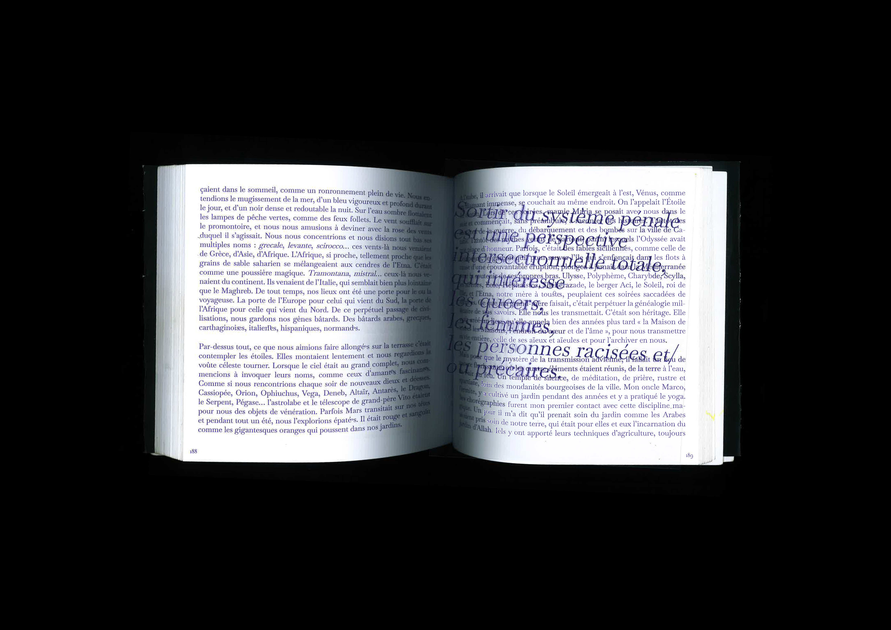

Réinvention d'entrée de lecture
15,5 x 15,5 cm
4 inserts
6 cartes
Manifeste pour une démocratie déviante : amours queers face au fascisme est un essai socio-politique de Costanza Spina divisé en deux parties : l’une aborde les symboles et pratiques d’un régime fasciste de ses racines italiennes à nos sociétés contemporaines et l’autre la théorie et les pratiques queer qui permettent de sortir de ces systèmes inégalitaires.
Afin de repenser un dispositif d’entrée de lecture, il s’agit d’opter pour le motif de la foule et de la tâche qui reprend la première définition de la queerness soit l’étrange, le non-commun. Le livre est accompagné de cartes avec des figures queer qui ont fait avancer la pensée et l’obtention de droits pour minorités sexuelles et de genres ainsi que des inserts avec des citations qui parsèment le texte.